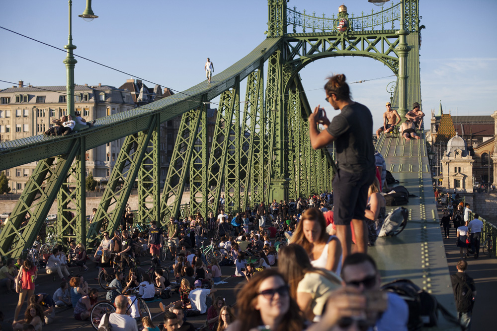

Szabadság-híd
A Szabadság híd Budapest egyik, 1896-ban, a főváros harmadik közúti átkelőjeként átadott hídja.
A XI. kerületi Szent Gellért tér és az V. – IX. kerületi Fővám tér között vezet át a Dunán, a Kiskörút folytatásaként.
Az átkelő az Erzsébet hídtól délre, a Petőfi hídtól északra található, a Duna 1645,3 folyamkilométerénél.
Budapest legrövidebb hídja. A híd jellegzetes díszei a pillérek kapuzatának tetején ülő turulmadarak.
A Nagy Virgil tervezte kapuzatokat a történelmi magyar címer díszíti. A híd rácsos szerkezete miatt könnyen felmásznak rá.
Teljes hosszúsága: 333,6 m.
Szélesség: 20,1 m.
Sávok száma: 2×1 + villamos.
